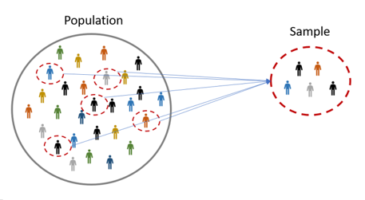
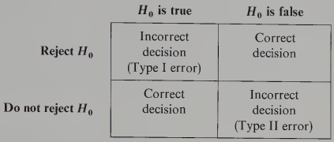

Chapter 3 Inferential Statistics
Statistical data analysis falls into two general categories: descriptive and inferential. Descriptive statistics comprises methods to describe and summarize the collected data using tables (e.g. frequency distribution), graphs (e.g. bar graph) and numbers (e.g. mean). These methods help us describe and, therefore, learn about the world around us.
The following scenarios involve descriptive statistics:
- A student wants to determine her average quiz score for the past 5 calculus quizzes.
- A student wants to know the percentage of classes he attended in which the lecture ended at exactly 20 minutes past the hour.
- A woman wants to know the variation in the dinner cooking time for the past five days.
- A teenager wants to know the daily average number of tik-tok posts that includes cats.
See Chapter 1 for more details about descriptive methods of statistical data analysis.
On the other hand, inferential statistics, which are the subject of this Chapter, involves methods for making generalizations, estimates or conclusions about some characteristic of the population, known as a parameter, using information from the collected data. Recall (from STC 137) that in most practical situations, it is impractical (e.g., surveying every citizen in a country) or impossible (e.g., testing every manufactured item) to collect data from the entire population. As a result, we collect data from a randomly selected subset of the population under study, known as a sample (see example in Figure 3.1). Based on this sample, we make statements or conclusions about the population under study.

Figure 3.1: Illustration of a sample drawn from a population.
The following scenarios (analogous to the ones above) involve inferential statistics:
- A student wants to predict her calculus quiz score based on quiz scores from the previous 10 quizzes.
- Based on lecture time data from the previous 10 lecture sessions, a student wants to estimate the duration of today’s lecture.
- Based on the cooking times from the first quarter of the year, a woman wants to estimate the variation in her second quarter cooking times.
- Based on information from 1000 tik-tok posts from last year, a teenager wants to predict the average number of posts that will feature cats next year.
The main focus of this chapter is on giving a basic introduction to the main methods of inferential statistics that are useful in practice. As already mentioned at the beginning of Chapter 2, probability is important for developing and using inferential statistical methods. Probability can be seen as a bridge between descriptive and inferential statistics. Probability and statistics both deal with questions related to populations and samples but proceed in an “inverse manner” to each other:
- In a probability problem, properties of the population under study are assumed known and questions regarding a sample from the population are answered.
- In an inferential statistics problem, we start with the sample and make use of its properties to answer questions regarding the population from where the sample was taken.
Note that, due to sampling error, estimates based on one sample will differ from those based on another sample. Thus, there is a degree of uncertainty about the true population characteristics. Statistical inference (another phrase for inferential statistics) allows us to understand, quantify and report this uncertainty.
3.1 Statistical inference methods
3.1.1 Point estimation
Suppose that \(\theta\) is an unknown population parameter to be estimated. To estimate \(\theta\), we collect a random sample of size \(n\), denoted by \(x_1,x_2,\dots,x_n\), from the population under study. Based on the sample, we calculate a corresponding characteristic of the sample called a sample statistic:
\[\hat{\theta}=h(x_1,x_2,\dots,x_n)\] where \(h(\cdot)\) is any function of the observed sample data that depends on the problem under study. For instance, if \(\theta\) is the population average (mean), \(\mu\), then
\[h(x_1,x_2,\dots,x_n)=\bar{x}=\frac{\sum_{i=1}^nx_i}{n}\] is the sample mean of the observed sample data. The procedure to calculate \(\hat{\theta}\) is called point estimation and the value of the sample statistic \(\hat{\theta}\) is called the point estimate of \(\theta\).
3.1.2 Interval estimation
The point estimate \(\hat{\theta}\) alone does not give much information about the precision or reliability of the estimation of the population parameter \(\theta\). In particular, without any additional information, we don’t know how close \(\hat{\theta}\) is to the true value of \(\theta\). An alternative to reporting a single value for the parameter to be estimated is to calculate and report an interval of values, known as an interval estimate or confidence interval, likely to include the true value of the parameter \(\theta\). The interval estimate is obtained by adding a value \(\epsilon\), called the margin of error, to the point estimate
\[\hat{\theta}\pm \epsilon\] \[(\hat{\theta}-\epsilon,\hat{\theta}+\epsilon)\] The process of calculating an interval estimate is called interval estimation. There are two important concepts in interval estimation. First, the length of the interval, given by \(2\epsilon\), which gives information about the precision of the interval estimate. Second, the confidence level, which measures the reliability of the interval estimate. If the confidence level is high and the resulting interval is quite narrow, our knowledge of the value of the parameter is reasonably precise. A very wide confidence interval, however, gives the message that there is a great deal of uncertainty concerning the value of what we are estimating.
3.1.3 Hypothesis testing
Frequently, the objective of statistical data analysis is not to estimate a parameter but to test whether a hypothetical statement about the parameter is true or false. For instance, a pharmaceutical company might be interested in knowing if a new drug is effective in treating a disease. Here, we have two hypothetical statements. The first one is that the drug is not effective. The second one is that the drug is effective. We denote these hypotheses as \(H_0\) and \(H_1\), respectively. The hypothesis \(H_0\) is called the null hypothesis and the hypothesis \(H_1\) is called the alternative hypothesis. The null hypothesis, \(H_0\), is usually referred to as the default hypothesis, that is, the hypothesis that is initially assumed to be true. The alternative hypothesis, \(H_1\), is the statement contradictory to \(H_0\). Based on the observed data, we need to decide either to accept \(H_0\), or to reject it, in which case we say we accept \(H_1\). These are problems of hypothesis testing.
As a practical example of hypothesis testing, consider the following scenario: A leading drug in the treatment of cancer has an advertised success rate of \(84\%\). Lerato, a researcher, believes she has found a new drug, for treating cancer patients, that has a higher therapeutic success rate than the leading drug, but with fewer side effects. To test her assertion, she gets approval from the South African Health Products Regulatory Authority (SAHPRA) to conduct an experimental study involving a random sample of 60 cancer patients. The proportion of patients in the sample receiving therapeutic success will be used to determine if the success rate, \(p\), for the population of cancer patients is higher than \(0.84\). Lerato arbitrarily decides that she will conclude that the therapeutic success rate of the new drug is higher than \(0.84\) if the proportion of cancer patients in the sample having therapeutic success after taking the drug is \(0.86\) or higher. Otherwise, she will conclude that her drug is no more effective than the currently used drug. It appears, at first glance, that the decision should be clear-cut—just compute the sample proportion, compare it to \(0.84\), then make a decision. But the decision rests on the outcome of a single sample proportion, which will vary from sample to sample. If the true proportion in the population receiving therapeutic success is less than or equal to \(0.84\) (i.e., if \(p\leq0.84\)), there is the possibility that \(\hat{p}\) could be greater than \(0.86\), by chance, similarly, there is the possibility that the sample proportion could be less than \(0.84\) even if the true proportion is, say, \(0.87\). The uncertainty involving the researcher’s decision can be attributed, in part, to the standard error of the sample proportion. The null and alternative hypotheses statements are
\[ H_0: p\leq 0.84\\ H_1: p>0.84 \] There are two types of hypothesis. First, is the hypothesis that a researcher would like to establish called the research hypothesis or experimental hypothesis. This is the alternative hypothesis, \(H_1\), that Lerato (the researcher in the above scenario) is trying to gather evidence to support. Second, is a claim or the hypothesis of no difference about the value of a population parameter. This is the null hypothesis that Lerato is trying to find evidence against.
3.1.3.1 Decision and Conclusion of a hypothesis test
In order to establish a research hypothesis, the null hypothesis must be rejected. This happens when the evidence obtained from one sample is inconsistent with the statement of the null hypothesis. If the sample evidence is consistent with the null hypothesis, it does not necessarily imply that the null hypothesis is true, it simply means that we do not have sufficient evidence to reject it. The decision of a hypothesis test refers to whether or not the null hypothesis, \(H_0\), is rejected. Whereas, the conclusion of the hypothesis test refers to whether or not the sample evidence is enough to support the statement under the alternative hypothesis, \(H_1\). For the above scenario, if the sample evidence shows that \(p=0.84\), then there is no difference between Lerato’s drug and the leading drug. Our decision is not to reject the null hypothesis and our conclusion is that there is not enough evidence in support of Lerato’s drug over the leading drug. On the other hand, if the sample evidence shows that \(p>0.84\), our decision is to reject the null hypothesis and conclude that there is significant evidence in support of Lerato’s drug over the leading drug.
Note that the relation expressed by the null hypothesis must include one of the three symbols “\(\leq\)”, “\(\geq\)”, or “\(=\)”. The statistical hypothesis \(p<0.84\) is not an acceptable null hypothesis, but it is an acceptable alternative hypothesis. The following are examples of valid statistical hypotheses statements:
\[ H_0:\mu=25\\ H_1:\mu\neq 25 \]
\[ H_0:\sigma\leq 4\\ H_1:\sigma > 4 \]
\[ H_0:p\geq 0.5\\ H_1:p < 0.5 \]
Note that in each of the above hypotheses statements, \(H_1\) is the opposite of \(H_0\). The following are more examples of hypothesis testing:
A doctor believes that drug A is better than drug B in treating a certain disease. This becomes the alternative hypothesis \(H_a\). The null hypothesis \(H_0\) is that drug A is not better than drug B. If the doctor gathers sufficient evidence to reject \(H_0\), there is a strong likelihood that \(H_a\) is true.
An agronomist would like to determine if a new brand of fertilizer will increase grain production. The null hypothesis is \(H_0:\) the new fertilizer will not increase grain production. The alternative hypothesis is \(H_a:\) the new brand of fertilizer will increase grain production. If the sample evidence gathered by the agronomist shows no evidence in support of \(H_a\), then \(H_0\) cannot be rejected which means that the new fertelizer will not increase grain production.
A consumer who purchased a new car 4 months ago does not believe the advertised claim that the average gas mileage is at least \(45\) miles per gallon on the highway; he suspects it is less than \(45\) miles per gallon. Thus, the statement of the alternative hypothesis becomes \(p < 45\), and the statement of the null hypothesis is \(H_0:p\geq 45\). Note that if \(H_0\) is rejected, then the consumer will have support for \(H_a\) being true.
It is very important to note that the truth of a statistical hypothesis is never known with certainty. The only way to determine the unknown value of the parameter is to examine the whole population. Since this is not always practical or possible, a decision involving the null hypothesis could involve an error.
3.1.3.2 Errors of a hypothesis test
A hypothesis test can result in any one of four possible outcomes shown in the table below:

Figure 3.2: Errors of a hypothesis test
The first row of the table shows what can happen if the decision is to reject \(H_0\). If the \(H_0\) is false, then the decision is correct. However, if \(H_0\) is true and we reject it, we make a Type I error. The second row shows what can happen if the decision is not to reject \(H_0\). If \(H_0\) is true, then the decision is correct. However, if \(H_0\) is false and we do not reject it then we are making a Type II error.
Recall the earlier example of hypothesis testing of the effectiveness of a new drug for cancer treatment. The hypotheses statement was as follows
\[ H_0: p\leq 0.84\\ H_1: p>0.84 \] In this examples, the Type I error of rejecting \(H_0\) when it is true corresponds to the researcher (Lerato) claiming that the new cancer drug is more effective than the leading drug (\(p>0.84\)) when in fact the new drug is no better than the leading drug. In contrast, the Type II error of not rejecting \(H_0\) when it is false corresponds to Lerato concluding that the new drug is not more effective compared to the leading drug (\(p\leq 0.84\)) when in fact the new drug has a higher therapeutic success rate than the leading drug. For the cancer drug hypothesis test, suppose that \(H_0\) is true as an equality, that is \(p=0.84\). The probability of making a Type I error when the \(H_0\) is true as an equality is called the level of significance, typically denoted as \(\alpha\). For the cancer drug example, the level of significance is the probability of rejecting \(H_0:p\leq 0.84\) when \(p=0.84\).
In practice, the person responsible for the hypothesis test specifies the level of significance. By selecting \(\alpha\), that person is controlling the probability of making a Type I error. If the cost of making a Type I error is high, small values of \(\alpha\) are preferred. If the cost of making a Type I error is not too high, larger values of \(\alpha\) are typically used.